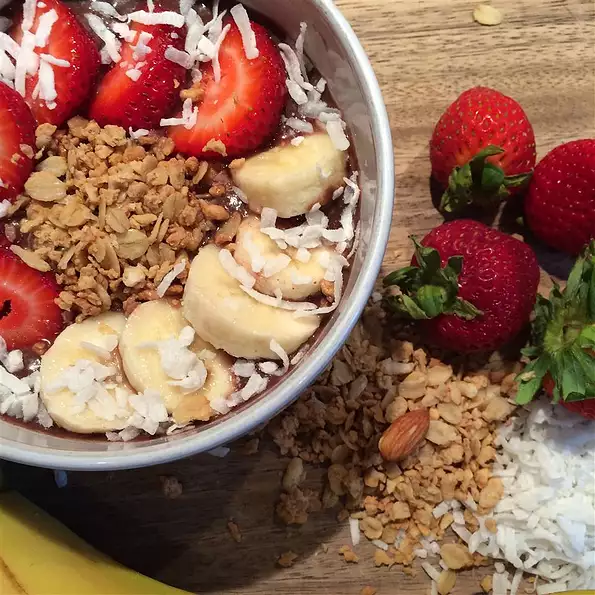

Strawberry Lime Smoothie Pops

Strawberry Lime Smoothie Pops Benefit
A strawberry is richer in vitamin C, compared to other citrus fruits. It is capable to provide as much as 149 percent of the daily value. Vitamin C is essential to the human body because it keeps us away from cough and colds, and a lot more diseases such as heart problems, cataract, and so on.
Ingredients
- 1 cup Almond Breeze Vanilla almondmilk
- 1 cup frozen strawberries
- ½ cup vanilla Greek yogurt
- 1 tablespoon honey or maple syrup
- 1 medium banana
- ½ lime, juiced
Directions
- Blend all ingredients, then pour into ice pop molds.
- Freeze for at least 2 hours (or overnight).
Back to top
Back to Home Page